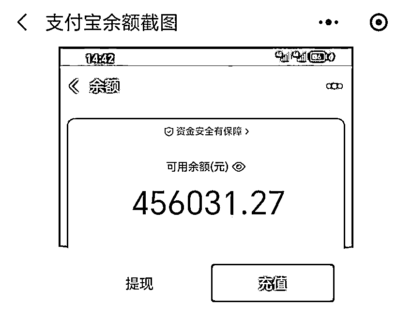
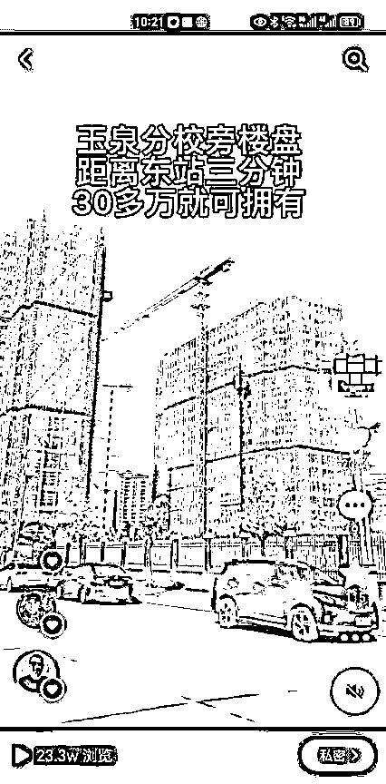
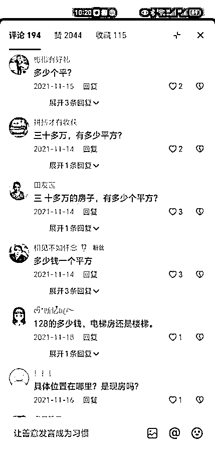
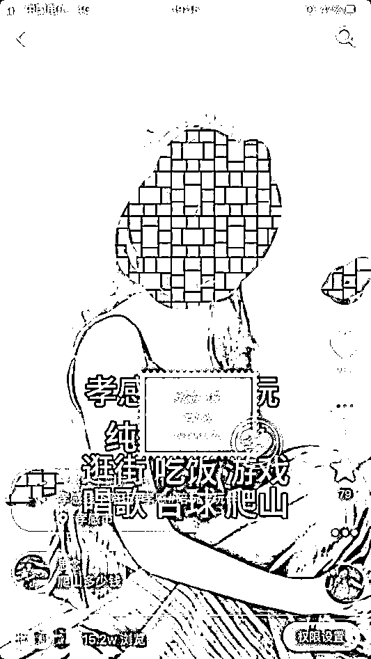
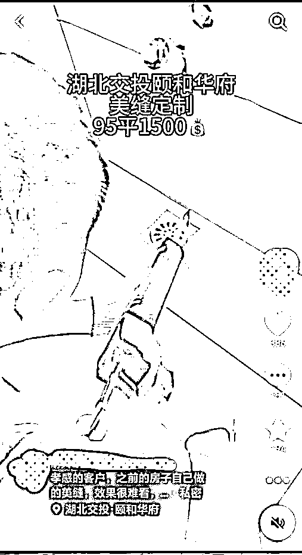
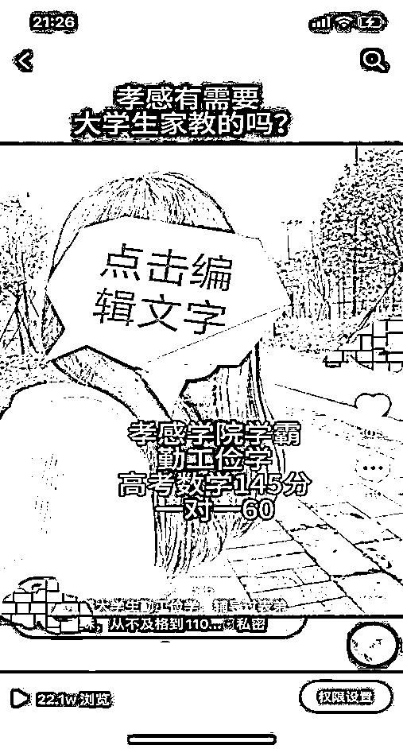

来源：https://g007onhtw72.feishu.cn/docx/Rtd7dHRYkoWyAOxjViFcNrWAnbO
在房产行情如此艰难情况下，我是如何通过同城房产抖音号，从刚开始2个月一个客户都没有，到一年做到1500万销售额，单月佣金最高达到12万， 单账号收益30多万
生财圈友，大家好，我是鑫哥，有三年的互联网经验，目前专注于短视频同城变现板块，有不错的结果。今年6月份通过群友孙悦伟的推荐加入生财，有在风向标分享过我做过的同城项目，获得很多人的关注，今天第一次以文章形式分享我做同城项目的经验，希望对做项目的伙伴有一些启发，同时挑战一下自己。
我在2021年3月份开始操作同城房产抖音号，后来单账号每月收精准客户500多组，单月最高佣金12 万，单账号变现30多万，带身边几个伙伴挣到的佣金超100万。目前这个打法依然有用，而且还可以运用到同城的其他类目，很容易变现。

今天就讲讲我如何运用抖音大量获取客户去卖房，到现在跑通众多抖音同城变现账号的经历。有同城资源和技能的人可以认真看看，也许会对你有启发。复盘内容请移步到飞书文档查看:
一、发现项目机会
2020年下半年我进入房地产中介行业做销售，主要帮售楼部卖新房。当时做这个就是因为卖房子佣金高，虽然说房子难卖，但是佣金诱人。在我们当地，卖一套新房子佣金在2万到4万，有些楼盘佣金高达8万乃至20万。
刚做房产中介那会，最早用地推发单页和熟人介绍的方式进行推广。因为刚从广东回到本地，没什么人脉。当时一个月一个带看都没有，更不谈有成交，焦虑得不行。每次开会就很尴尬，一直想开拓新的销售渠道。
有一段时间刷到我们同城一个男士理发馆的抖音号，流量很大，几乎都是几百上千个点赞。我很好奇，就去他店里面理发，顺便了解生意情况。当时还是下午，就他一个理发师，半个小时不到，包括我在内，有5个客户等他理发。和老板聊天得知，他的客户几乎全部来自于抖音。而且还有很多客户，因为看到抖音宣传，开车从几十公里远的周边县市，来他这理发，关键收费是同行的2倍都不止。我隐隐约约地感觉到，商业的机会在抖音发芽了，我当时就想，要是把房产通过抖音来宣传，那收益岂不更大。
后面注册了房产抖音号，刚开始不知道拍什么好，没有人教，也没人带，就找网上房产大V模仿，出镜讲房产专业知识，当时为了出镜效果，我还特地穿了西装，带了工牌，刚开始容易忘记台词，我就一遍一遍地录视频，拍摄剪辑下来一个视频都耗费了半天时间。由于讲的知识太专业了，视频播放量不大。虽然收到一些客户私信，但是几乎都是买了房子，遇到问题，找我答疑的。为了解决播放量的问题，我甚至到我们当地最好的小学门口，和最新的商场前面拍摄，流量起来了，依然没收到精准客户。就这样摸索了三个月，抖音没有一单的成交，当时有一些灰心，停更了一个月。
在我视频停更的时间里，我一直在观看本地同行的抖音做的怎么样，当时房产市场行情不好，却有一个人一个月卖了三套房，打听得知都是从抖音收的客户，顿时我来了兴趣，找到他的抖音号，发现拍得好粗糙，但是评论区留言真的好多，都是问房子在哪？怎么买？多大面积之类的话。难怪他可以卖那多房子。
然后我分析他的视频元素，在他基础上进行优化，果不其然，改造后第一条视频就火了，当天播放达到22万，点赞2000多个，评论190多个，下午发的抖音，结果晚上接客户电话20多个，私信都回不过来，一直回客户消息，忙到晚上12点，全部是精准客户咨询。
以下就是当时的视频画面：


后来统计了一下，这一个视频为我卖出了5套新房。经过总结这个视频，我发现视频火爆的点在于标题和画面，标题我提到了我们本地比较出名的学校和高铁站，以及提到了一个价格很低的房子，同时画面是和文案配套的，拍摄的画面也是学校、高铁站、楼盘和样板间。正好满足了客户想要的点，所以传播得很好。
为了让后续视频都能持续大量曝光，我继续沿用上面视频的制作策略，选择大家都知道的商圈和学校进行全范围楼盘拍摄，效果出奇的好，从刚开始没有一组客户，到一天多的时候有6组客户，客户根本带不过来。
为了转化客户，我晚上11点多还在和客户打电话，期间有的客户不断挂我电话，我依然不停地跪舔客户。虽然客户资产都还没有我的多，为了钱还是得忍呀。当时五一、国庆，大年初二，关系很好的朋友结婚我都没去，依然在带客户看房子，累到启动汽车的时候出现了幻觉。
为了让我的视频制作更加高效，我所有视频采用统一标题形式，统一话术结构，统一的视频结构，统一的出场方式，并且去掉视频中多余的话术，尽量把视频时长缩短，提高播放量。同时快速回复评论区，用标准话术私信要客户联系方式，进行更深层次销售。我的房产视频得以大范围传播，触达周边几十公里的县级市客户。同时为了防止意向客户跳单，一般不提前告知具体售楼部名字和位置，约定公司会面，分析客户需求之后再去带看房子。
刚开始我客户带不过来的时候，周围同事同时还不以为然，后来发现我成交的越来越多，就有人向我请教如何做抖音，我教的方法也很简单，就让他们按照我的形式来拍就可以了，果不其然，他们很快就有成交，有几个跟进比较早的徒弟，几乎都出了10多单，靠房产抖音一共变现100多万，其中有一个拿到了公司年度销售冠军。
后来，我找到公司几个销售能力很强的人进行合作，由我来拍视频获客，他们跟进客户进行成交，也成交了不少，一年下来我拿到月度销售冠军，最佳贡献奖，年度优秀员工。
2022年，通过抖音单账号达到产值1500多万，收益30多万，后来同城房产抖音竞争越来越激烈，以及越来越多的房企结佣困难，我就慢慢退出房产圈，不过这个打法依然有效，只是成交难度变大。目前加上真人出镜，效果更好。
于是我用房产抖音打法做同城其他类目，依然收到很好的效果，很快做到本地类目头部，一个星期就变现3000+，其中有一个账号2天收了260个意愿付费客户，全部是自然流，没有付费，涉及门面、教育、装修、娱乐，甚至引起了本地官方机构的注意。
以下是我亲手操盘的项目：



同时还用我的方法培训商家做抖音，从最早她自己500播放，拍了2年200多个视频没有一个成交，到现在起步10000播放，每天都有不断的客户对接，单月抖音获客收益也过万了。
我也在生财学习到很多有用思维和方法，感谢孙悦伟的推荐和指引，感谢梁靠谱和芷蓝的指导，欢迎对同城变现有兴趣的伙伴前来交流合作。